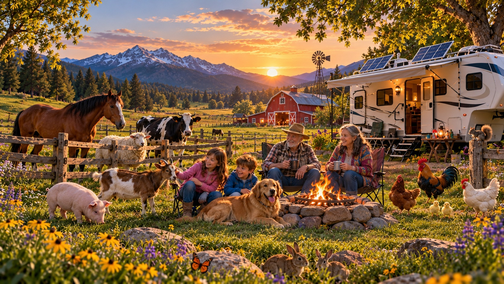

ACTIVITY 1 • FRIENDLY PETS
Meet Bear by the campfire.
Listen, repeat, and use the scene to connect the words with what you see.
El perro está junto al fuego.
The dog is beside the fire.

Listen, repeat, and use the scene to connect the words with what you see.